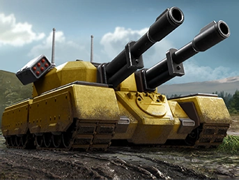
The most iconic unit in C&C history. A colossal dual-cannon heavy tank with self-repair capability and anti-air missile pods. Nearly unstoppable in direct assault, the Mammoth is slow and expensive but dominates any conventional engagement. A pair of Mammoths advancing on a base is a crisis requiring an immediate response.
- Dual 120mm cannons for devastating ground firepower
- Anti-air missile pods — dangerous to aircraft
- Self-repair when idle
- Evolved into the walking Mammoth Mk. II in Tiberian Sun
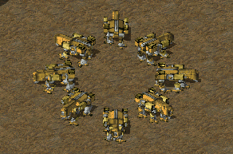
The Mammoth Tank reimagined as a towering bipedal war machine. Thirty years of Tiberium contamination and military evolution produced this near-indestructible superunit armed with dual railguns and anti-air missile batteries. A single Mk. II can hold a chokepoint against an entire opposing army. One of the most powerful units ever to appear in the series.
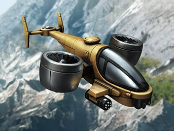
GDI's signature VTOL strike aircraft. Fast and agile with rocket pods for hit-and-run strikes against armor and structures. The Orca must return to an Orca Pad to rearm, making positioning and base distance critical. Its design evolved dramatically across the series — from twin-rocket gunship in Tiberian Dawn to heavy bomber variants in C&C3.
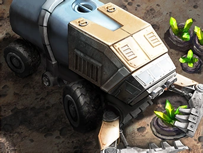
The economic engine of any Tiberium-era commander. Slow, unarmed, and absolutely vital, Harvesters crawl across contaminated fields scooping up Tiberium crystals and returning them to the Refinery. Destroying enemy Harvesters is one of the highest-value strategic moves in the game — a commander without income cannot build an army.
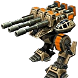
GDI's heavy artillery platform in C&C3, built as a three-legged walking siege unit. The Juggernaut fires over obstacles and rains massive shells onto targets from extreme range. It must deploy to fire and cannot move while shooting, making it vulnerable to fast flanking units. Used in pairs or clusters to provide sustained fire support for advancing GDI columns.
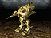
GDI's standard bipedal combat walker in Tiberian Sun. The Titan fills the role the Mammoth Tank held in Tiberian Dawn — a durable mid-tier assault platform forming the backbone of GDI ground forces. Armed with a dual-barrel cannon and tough enough to absorb significant punishment, Titans advance in columns to overwhelm Nod's faster but more fragile units. The walker aesthetic defines GDI's evolution into an increasingly high-tech military.
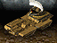
GDI's most unusual heavy vehicle. The Disruptor fires a sustained sonic beam that deals massive damage to structures and vehicles, passing through everything in its path and hitting multiple targets in a line simultaneously. Extremely powerful against static defenses from range, but the friendly-fire risk makes it dangerous in mixed formations. A precision tool for reducing hardened Nod bases from a safe distance before the main assault goes in.
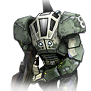
GDI's elite infantry in C&C3, encased in powered exoskeleton armor allowing them to operate in Red Zone Tiberium concentrations that would kill unprotected soldiers in minutes. Armed with a powerful rail gun and exceptionally durable by infantry standards, Zone Troopers can be paradropped anywhere on the map. They represent GDI's commitment to environmental adaptation — fielding soldiers who can survive and fight in a world already half-dead from Tiberium.
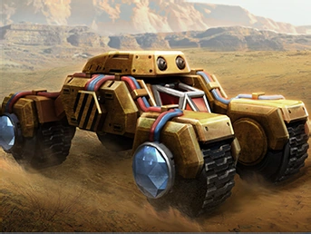
Nod's defining weapon in the early Tiberium Wars. The Stealth Tank is invisible to radar and visual detection until it fires, allowing it to ghost through enemy lines to destroy Harvesters, power plants, and undefended structures before fading back into the fog of war. Fragile in direct combat but devastating in ambush. The embodiment of Nod's hit-and-run doctrine.
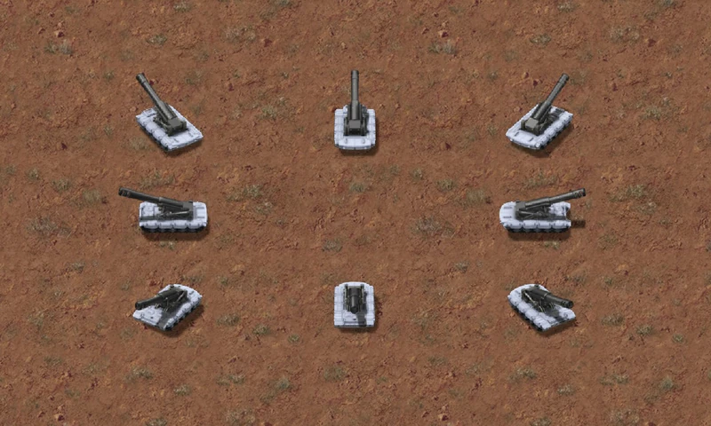
Nod's long-range siege weapon. Fires from extreme distances, shelling GDI installations before they can counterattack. Fragile and exposed in close combat, Artillery must be kept at range and screened by faster units. Devastating against buildings and stationary vehicles — the perfect partner to Nod's harassing infantry tactics.
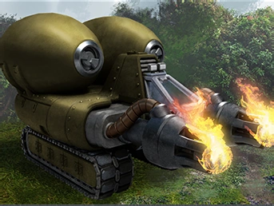
A fast-moving tank that sprays napalm at close range, instantly incinerating infantry and setting structures ablaze. If a Flame Tank reaches your base perimeter, your infantry are gone before you can react. Requires protection from heavy armor since it is relatively fragile — but in open terrain against massed infantry, nothing is more terrifying.
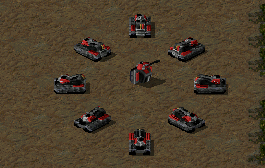
Nod's main battle tank in Tiberian Sun. The Tick Tank can dig itself into the ground, deploying as an immovable but heavily armored turret that is extremely difficult to destroy. When dug in, it gains a substantial defensive bonus. An advancing GDI force that has to dig out entrenched Tick Tanks at every chokepoint will struggle to make progress.
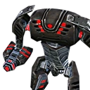
Nod's fearsome superunit in C&C3. A towering bipedal mech armed with a laser cannon, the Avatar can be upgraded by literally cannibalizing other Nod units — stripping their weapon systems and installing them onto itself. A fully upgraded Avatar simultaneously carries a flame thrower, a stealth generator, and a laser capacitor. One of the most customizable units in RTS history.
- Upgrade by consuming Flame Tank → gains flame thrower
- Upgrade by consuming Stealth Tank → gains cloaking field
- Upgrade by consuming Laser Capacitor → improves laser
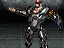
Brotherhood soldiers who have undergone Tiberium-enhanced cybernetic augmentation — willingly or otherwise. Cyborgs are heavily armored, nearly impossible to destroy without sustained fire, and self-repair when idle. When killed, their organic components survive and continue fighting as a crawling torso, requiring a second kill to permanently put them down. Cyborgs represent Nod's embrace of Tiberium mutation as a path to evolution: the body remade, the soldier unkillable.
- Self-repairs when idle
- Must be killed twice — torso keeps fighting after first kill
- Immune to most infantry-targeting weapons
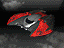
Nod's advanced fighter-bomber in Tiberian Sun. The Banshee is an exceptionally fast jet that fires twin plasma cannons, capable of destroying a GDI Titan in a single strafing run. Unlike GDI's Orca, the Banshee is a pure combat aircraft — it exists to kill. One of the fastest units in Tiberian Sun, it renders any GDI base without SAM coverage catastrophically vulnerable to surgical air strikes and forces GDI to dedicate significant resources to anti-air defense.
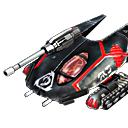
Nod's primary armored vehicle in C&C3. Faster and cheaper than GDI's Predator Tank, the Scorpion compensates for lighter construction with speed and numbers. A lone Scorpion is no match for a Predator head-to-head, but Nod rarely sends lone tanks — waves of Scorpions outmaneuver and overwhelm heavier GDI formations. Upgradeable with a laser capacitor that improves anti-armor performance, allowing late-game Nod armor to threaten units it couldn't touch early on.
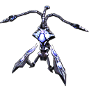
The Scrin's heaviest assault unit — a three-legged war machine that fires a devastating Tiberium-based beam capable of destroying GDI's heaviest armor. In Blue Zones where Tiberium is absent, Tripods are weakened, reflecting the Scrin's fundamental dependence on Tiberium for power and efficiency. In Red Zones, they are virtually unstoppable. Three Tripods advancing on a GDI base is a catastrophic scenario that typically requires orbital Ion Cannon support to resolve.
- Weakened in Blue Zones — strongest in Red Zone Tiberium fields
- Tiberium beam effective against all unit and structure types
- Comparable in threat level to Mammoth Mk. II
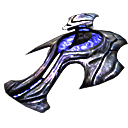
The Scrin's basic combat unit — a hovering alien vehicle serving as both reconnaissance platform and light attack vehicle. Seekers are fast and effective in swarms despite their individual fragility. They represent the Scrin's doctrinal approach: send expendable units ahead to identify threats, then respond with overwhelming force. The first Scrin units most GDI commanders encounter — and the last warning before Tripods and the Corrupters arrive behind them.

The Allied signature ground unit in Red Alert 2. Fires a concentrated prismatic light beam with extreme range and power. When multiple Prism Tanks are grouped together, they chain their beams — each additional tank multiplies total damage exponentially. Six Prism Tanks chaining against an Apocalypse Tank will eliminate it in under two seconds. The quintessential Allied "quality over quantity" unit.
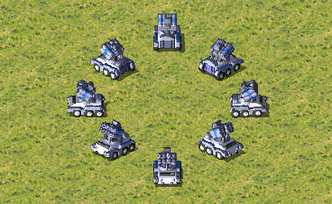
A highly adaptable armored vehicle that changes its weapon system based on the infantry unit loaded inside. Load a GI: machine gun. Load an Engineer: mobile repair vehicle. Load a Chrono Legionnaire: time-erasing weapon. Load a Navy SEAL: explosive charges. Load a Tanya: dual machine guns. No unit in C&C history adapts to more tactical situations.

The Allied ore miner, equipped with a Chronosphere drive for emergency extraction. When threatened, the Chrono Miner teleports instantly back to the nearest ore refinery rather than being destroyed. This makes Allied economy remarkably resilient — attacks on ore miners that would cripple Soviet operations simply trigger an automatic retreat and redeployment.
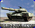
The Allied main battle tank in Red Alert 2. Faster and more maneuverable than the Soviet Rhino, with a smaller profile and faster turret traverse. The Grizzly cannot match a Rhino in a head-to-head slugfest, but Allied doctrine doesn't fight head-to-head — Grizzlies flank, pick off damaged Rhinos, and retreat before the Soviets can mass overwhelming numbers against them. The tank that embodies Allied precision and tactical finesse over Soviet brute force.
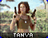
The Allied commando — a one-woman special operations unit who can single-handedly destroy entire infantry formations and demolish structures with C4 charges. Tanya is immune to mind-control, swims across water obstacles, and can destroy any building on the map if she reaches it. A single Tanya inserted into an undefended base perimeter can end the game. The embodiment of Allied quality-over-quantity doctrine distilled into one very expensive, very lethal soldier.
- One-shots all infantry regardless of armor type
- Demolishes any structure with C4 charges
- Immune to psychic mind-control
- Can swim — bypasses shore defenses entirely
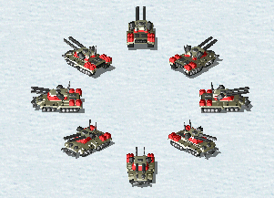
The most powerful conventional tank in Red Alert 2. Dual cannons, extreme armor, and anti-air missiles make the Apocalypse a threat to every unit class on the battlefield. Expensive and slow, but nearly unstoppable in mass. A column of Apocalypse Tanks grinding toward an Allied base is an existential crisis — they must be stopped by Prism Tanks or air power, not met head-on.
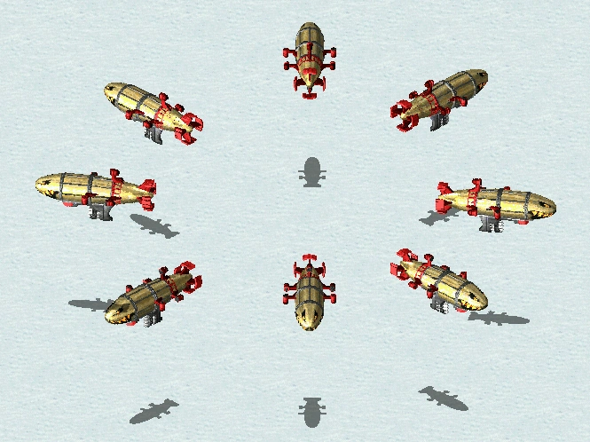
A massive Soviet bombing zeppelin that moves with agonizing slowness but drops bombs that level entire city blocks. Once a Kirov reaches its target, it can destroy a Construction Yard before it can be killed. It must be intercepted far from the base — let it get close and it's already won. The Kirov is Soviet patience and brute force made airborne.
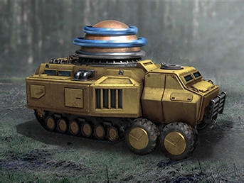
An experimental Soviet battle tank that fires bolts of high-voltage electricity derived from Tesla's alternating current research. Highly effective against infantry mobs and lightly armored vehicles, with chain-lightning that jumps between adjacent enemies. A terrifying sight when an entire column opens fire simultaneously in a grid of sparking electrical arcs.
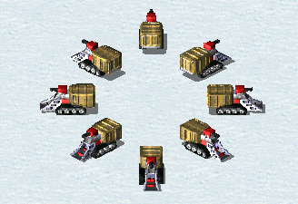
The Soviet ore miner, unlike the Allied Chrono Miner, believes in fighting back. The War Miner is armed with forward-facing machine guns and can defend itself against light harassment. It survives attacks that would destroy Allied miners simply by shooting back. A small thing, but it embodies Soviet philosophy: everything on the battlefield should be capable of killing something.
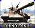
The Soviet workhorse tank in Red Alert 2. More heavily armored and more powerful than the Allied Grizzly, the Rhino wins any direct engagement but lacks the Grizzly's agility. Soviet doctrine accepts this trade: produce more Rhinos than the Allies can destroy, advance on all fronts simultaneously, and let numerical superiority do what precision cannot. The Rhino is the spine of every Soviet ground offensive — slow, heavy, and relentless.
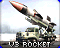
Soviet ballistic missile artillery with extreme range. The V3 fires homing rockets that arc high before plunging into targets, capable of striking anything on the map from behind a defensive screen. Essentially helpless in direct combat and fragile when exposed — Allied doctrine calls for eliminating V3 Launchers immediately — but kept at range and screened by Apocalypse Tanks, a battery of V3s will reduce any Allied installation to rubble before it can be reached.
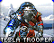
Heavy infantry equipped with a Tesla coil backpack that discharges devastating electrical bolts at infantry and vehicles alike. Tesla Troopers can manually charge a Tesla Coil defense tower, allowing it to fire at full power even when the base's power grid has been disrupted — the most common Allied tactic against Soviet perimeter defenses. One of the series' most versatile infantry units: a frontline shock troop and a base-defense sustainer simultaneously.
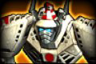
The Empire's heaviest ground unit — a towering humanoid battle mech named for the horned demons of Japanese folklore. The King Oni fires twin plasma beams from its demonic-face eyes, stomps lighter vehicles underfoot, and has enough armor to absorb firepower that would vaporize any conventional tank. Slow and expensive, but visually terrifying and devastatingly effective in breakthrough assaults against fortified Allied or Soviet positions.
- Twin plasma eye beams effective against all unit types
- Crushes light vehicles and infantry underfoot
- Most heavily armored Empire ground unit
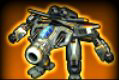
The Empire's signature transforming combat unit. In jet mode the Tengu is a fast fighter aircraft; transforming to ground mode produces a bipedal mech with close-range weapons. This dual capability embodies the Empire's doctrine of flexibility and surprise — the same unit providing air cover drops into ground combat the moment it's needed. Effective in both roles but not optimal in either. One Tengu is manageable. Thirty Tengus coordinated across modes is a crisis.
- Jet mode: fast interception and ground strafing
- Mech mode: close-range assault on infantry and vehicles
- Transitions between modes instantly in the field
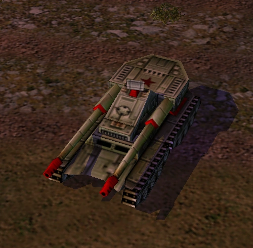
China's answer to every tactical problem: overwhelming mass. The Overlord is a gargantuan super-tank that can literally crush lighter vehicles under its treads. It accepts one of three turret upgrades — a Gatling cannon for anti-infantry and anti-air duty, a personnel bunker to transport infantry inside the tank itself, or a propaganda speaker that heals nearby friendly units. Slow, expensive, unstoppable.
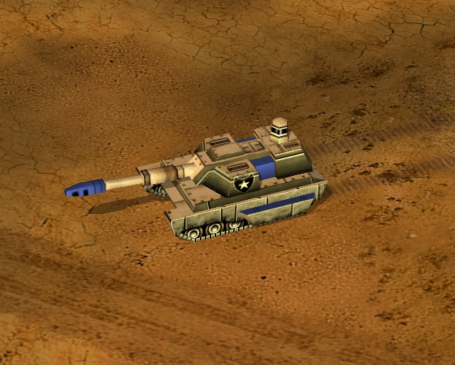
The US Army's main battle tank in the Generals near-future setting. Equipped with a target laser that designates points for surgical air strikes, plus a point-defense laser system that intercepts incoming missiles in flight. Quality over quantity against China's numerical superiority — each Paladin is smarter and more survivable than any individual Soviet or Chinese tank.
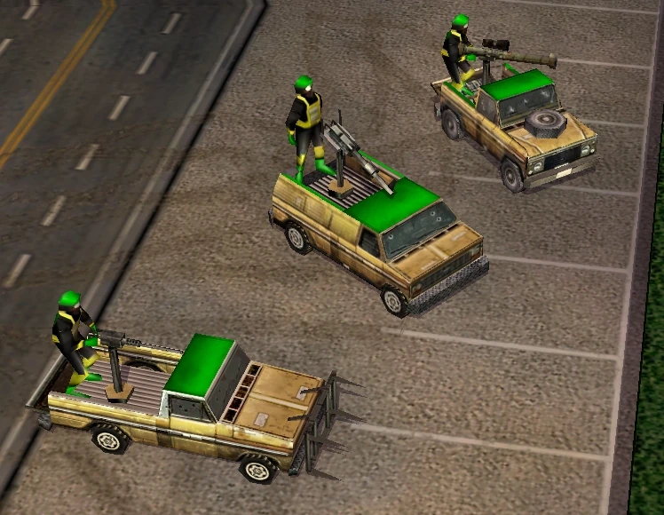
A pickup truck with a heavy machine gun bolted to the bed. The GLA Technical is cheap, fast, and surprisingly dangerous in numbers. More than anything, it represents the GLA's philosophy: improvise, swarm, and never fight fair. A horde of Technicals rushing a US forward operating base is chaotic and lethal — even the most advanced army can be overwhelmed by enough cheap, fast vehicles.
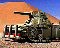
The GLA's primary armor — a salvaged and heavily modified tank derived from captured hardware. The Scorpion is outclassed by a Paladin or Overlord in direct confrontation, but the GLA never cares about units that get destroyed: Scorpions can be upgraded using salvage crates from destroyed vehicles, potentially gaining weapons stripped from enemy Overlords or Paladins. Over a long campaign, GLA armor accumulates the enemy's best technology and becomes progressively more dangerous.
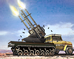
Four anti-aircraft cannons mounted on a truck chassis — the GLA's answer to US air superiority. Cheap, prolific, and devastating against aircraft. Can be deployed as a static emplacement for perimeter defense. Against infantry it is catastrophically effective at close range. US doctrine of total air dominance becomes far more complicated when the opponent fields dozens of Quad Cannons hidden in civilian structures, tunnel exits, and defensive emplacements throughout the map.
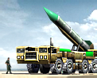
The GLA's long-range artillery, firing massive SCUD missiles tipped with anthrax biological warheads. A SCUD strike on an unprotected infantry or vehicle cluster is absolutely devastating, leaving toxic residue that continues damaging units after impact. Fragile if caught by Raptors, but kept behind Quad Cannon screens, a SCUD battery can attrition any conventional formation to nothing before they get close enough to counterattack. The GLA's substitute for conventional fire support.
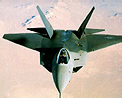
The US Air Force's primary fighter-bomber. Fast, equipped with both air-to-air and air-to-ground missiles, the Raptor provides close air support for ground operations while intercepting enemy aircraft. The US doctrine of total air superiority depends on Raptors over the battlefield at all times — denying opponents their air assets while US forces operate freely from above. A flight of Raptors can eliminate a SCUD battery or Overlord column before ground forces ever need to engage.
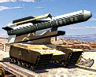
The US Army's standoff precision artillery, firing GPS-guided cruise missiles at targets anywhere in sensor range. The Tomahawk neutralizes threats — tunnel openings, SCUD batteries, Overlord tanks — from beyond retaliation range. A surgical complement to Raptor air power, embodying US doctrine: minimize direct engagement, maximize precision lethality at maximum distance. The enemy cannot fight back against something they cannot reach.
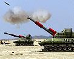
China's heavy artillery, firing massive incendiary shells that blanket entire areas in fire. The Inferno Cannon excels at area-denial — a barrage across a chokepoint makes that chokepoint impassable for minutes after the shells land. Combined with Overlord tank advances, Inferno Cannons clear defensive positions before Chinese ground forces assault them directly. Slow and heavy, but devastating at range in the hands of a patient commander willing to set the world on fire.
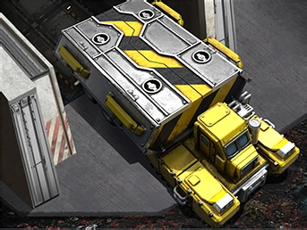
The most important vehicle on the battlefield. The MCV deploys into a Construction Yard, enabling all base-building. If it is destroyed before deploying, or your Construction Yard is destroyed without a replacement MCV, you cannot build new structures. Every battle in classic C&C is ultimately fought to protect your MCV while destroying your opponent's. The vehicle that starts — and ends — wars.